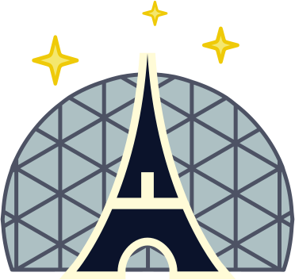
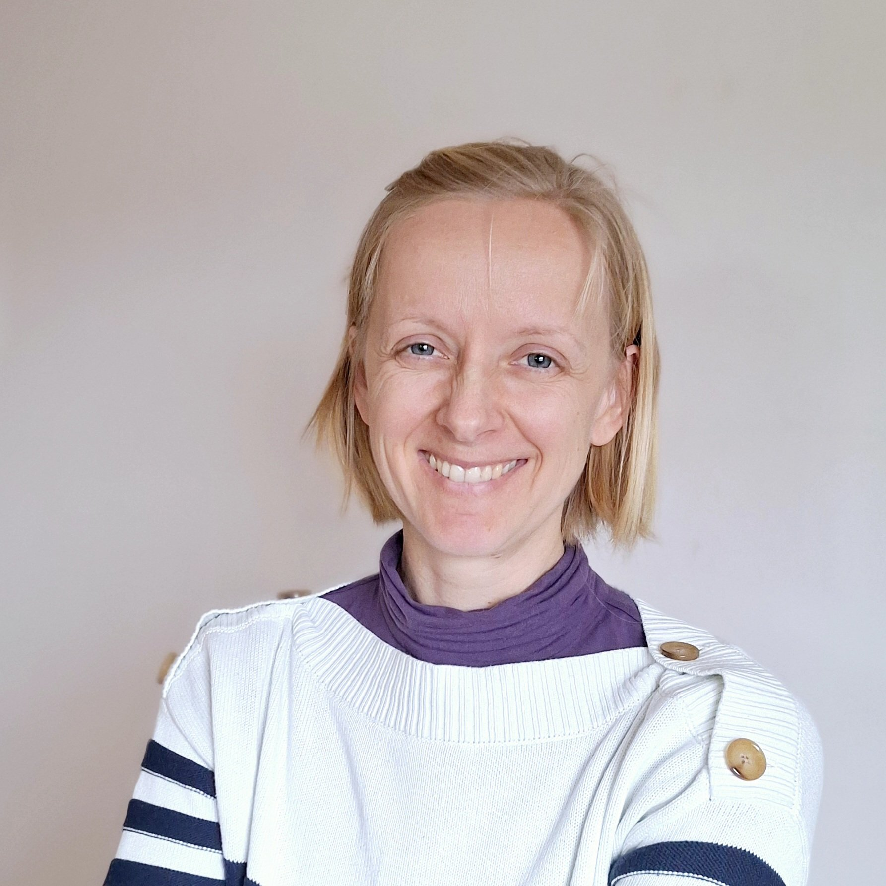
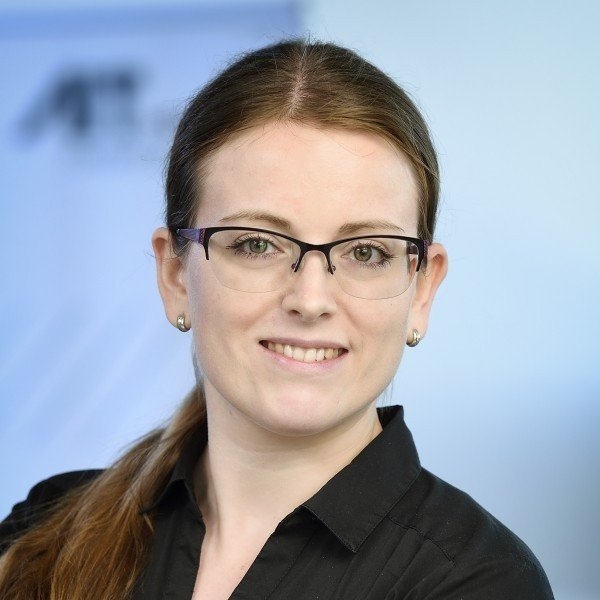
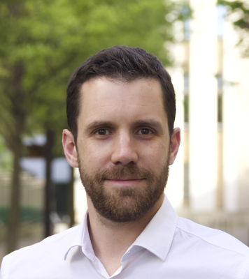
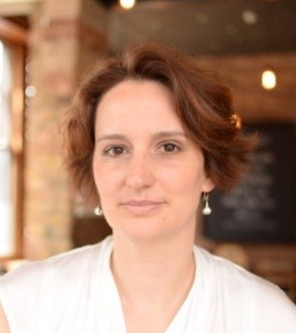
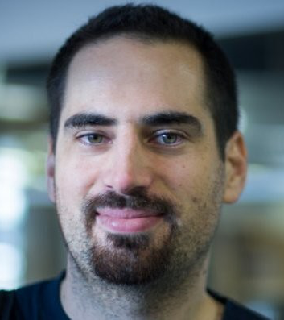
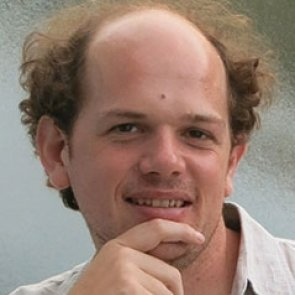

September 30th & October 1st, 2025
Cité des Sciences
PyData Paris
Meet the global community of open-source AI/ML and scientific computing.

Expand your knowledge, explore new possibilities, and connect with fellow pioneers.
PyData brings together data scientists, engineers, educators, developers, and maintainers of opens-source projects, for in-depth training, insightful keynotes, networking events, and practical talks.
PyData Paris 2025 is brought to you by
Keynotes

Apache Arrow
Quansight Labs

Austrian Institute of Technology
Cité des Sciences
Centre des Congrès (Level -1)
30 Av. Corentin Cariou, 75019 Paris

Organization Committee

QuantStack

Quantstack
Université Paris Saclay - LISN

:probabl.

Stats4decision
:probabl.
Paris Meetup Community

Paris is home to a vibrant community around the PyData ecosystem.
Join our meetup group, and stay tuned for future community events.
Join the PyData Paris MeetupABOUT PYDATA
PyData is an educational program of NumFOCUS, a 501(c)3 non-profit organization in the United States. PyData provides a forum for the international community of users and developers of data analysis tools to share ideas and learn from each other. The global PyData network promotes discussion of best practices, new approaches, and emerging technologies for data management, processing, analytics, and visualization. PyData communities approach data science using many languages, including (but not limited to) Python, Julia, and R.
We aim to be an accessible, community-driven conference, with novice to advanced level presentations. PyData tutorials and talks bring attendees the latest project features along with cutting-edge use cases.
ABOUT PYDATA PARIS 2025
PyData Paris 2025 is brought to you by QuantStack. NumFOCUS is grateful to QuantStack for organizing this PyData event. As host, QuantStack has agreed to steward the mission of PyData as an educational program benefiting the community of users and developers of open source scientific tools. A portion of revenue will be donated to NumFOCUS.